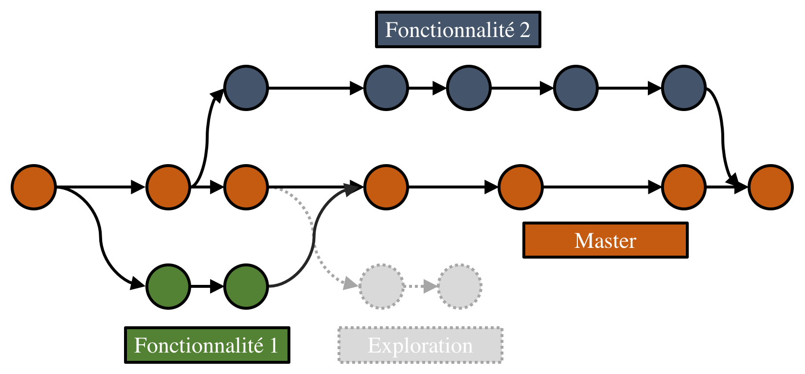

name: inverse layout: true class: center, middle, inverse --- # Travail collaboratif - Bonnes pratiques <hr /> .nolink[[Andréanne Beardsell](https://www.researchgate.net/profile/Andreanne_Beardsell)] <br /> .nolink[[Nicolas Casajus](http://ahasverus.github.io/)] <br /><br /> <img src="img/logo-slack.png" style="width:100px; margin-left: 20px; margin-right: 20px;"></img> <img src="img/logo-git.png" style="width:225px; margin-left: 20px; margin-right: 20px;"></img> <img src="img/logo-github.png" style="width:150px; margin-left: 20px; margin-right: 20px;"></img> <br /> .ssmall[Présentation disponible en ligne<br />[Lien pas encore actif](https://chaireBioNorth.github.io/labmeeting-20171124)] <!-- .ssmall[[https://chaireBioNorth.github.io/labmeeting-20171124](https://chaireBioNorth.github.io/labmeeting-20171124)] --> .ssmall[Code diponible sur GitHub<br />[https://github.com/chaireBioNorth/labmeeting-20171124](https://github.com/chaireBioNorth/labmeeting-20171124)] <br /> .ssmall[Réunion de laboratoire] <br /> .ssmall[Vendredi 24 Novembre 2017] ??? pas de note --- layout: false ## Travail collaboratif <hr /><br /> * Texte... -- * Texte... --- name: inverse layout: true class: center, middle, inverse --- <img src="img/logo-slack-2.png" style="width:450px;"></img> --- layout: false ## Slack en quelques mots <hr /><br /> * Texte... --- name: inverse layout: true class: center, middle, inverse --- <img src="img/logo-git.png" style="width:350px;"></img> --- layout: false ## Git en quelques mots <hr /><br /> * Texte... --- layout: false ## Démarrage d'un projet Git <hr /> <img class="git" src="img/git-00.png"></img> <br /><br /> ```bash $ mkdir monprojet/ # Création d'un nouveau dossier $ cd monprojet/ # Déplacement dans ce dossier $ git init # Initialisation d'un versioning ``` --- layout: false ## Ajout de premier(s) fichier(s) <hr /> <img class="git" src="img/git-01.png"></img> <br /><br /> ```bash $ git add --all # Ajout des modifications à l'historique* $ git add *.txt # Ajout des modifications à l'historique* $ git add readme.txt # Ajout des modifications à l'historique* $ git commit -m "Mon 1er commit" # Engagement des modifs + Commentaire ``` --- layout: false ## Poursuite du développement <hr /> <img class="git" src="img/git-02.png"></img> <br /><br /> ```bash $ git status # Statut des fichiers modifiés $ git add --all # Ajout des modifications à l'historique $ git commit -m "Mon 2nd commit" # Engagement des modifs + Commentaire $ git log --oneline # Affichage de l'historique ``` --- layout: false ## Notion de branches <hr /> <img class="git" src="img/git-03.png"></img> <br /><br /> ```bash $ git branch # Affichage des branches # * master ``` --- layout: false ## Retour en arrière (1) <hr /> <img class="git" src="img/git-04.png"></img> <br /><br /> ```bash $ git log --oneline # Affichage de l'historique # 802c024 Mon 2nd commit # 2dea58d Mon 1er commit $ git checkout 2dea58d readme.md # Retour en arrière $ git commit -m "Etat initial" # Engagement des modifications ``` --- layout: false ## Retour en arrière (2) <hr /> <img class="git" src="img/git-05.png"></img> <br /><br /> ```bash $ git log --oneline # Affichage de l'historique # 6acd22h Etat initial # 802c024 Mon 2nd commit # 2dea58d Mon 1er commit ``` --- layout: false ## Poursuite du développement <hr /> <img class="git" src="img/git-06.png"></img> <br /><br /> ```bash $ git status # Statut des fichiers modifiés $ git add --all # Ajout des modifications à l'historique $ git commit -m "Mon 3ème commit" # Engagement des modifs + Commentaire ``` --- layout: false ## Création d'une branche <hr /> <img class="git" src="img/git-10.png"></img> <br /><br /> ```bash $ git branch exploration-1 # Création d'une nouvelle branche $ git branch # Affichage des branches # exploration-1 # * master ``` --- layout: false ## Déplacement dans une branche <hr /> <img class="git" src="img/git-10.png"></img> <br /><br /> ```bash $ git checkout exploration-1 # Déplacement dans une branche $ git branch # Affichage des branches # * exploration-1 # master ``` --- layout: false ## Poursuite du développement (branche parallèle) <hr /> <img class="git" src="img/git-11.png"></img> <br /><br /> ```bash $ git status # Statut des fichiers modifiés $ git add --all # Ajout des modifications à l'historique $ git commit -m "Mon nouveau commit" # Engagement des modifs + Commentaire ``` --- layout: false ## Suppression d'une branche _non mergée_ (1) <hr /> <img class="git" src="img/git-12.png"></img> <br /><br /> ```bash $ git checkout master # Déplacement dans la branche master $ git branch # Affichage des branches # exploration-1 # * master ``` --- layout: false ## Suppression d'une branche _non mergée_ (2) <hr /> <img class="git" src="img/git-13.png"></img> <br /><br /> ```bash $ git branch -D exploration-1 # Suppression d'une branche «non mergée» $ git branch # Affichage des branches # * master ``` --- layout: false ## Travail dans une nouvelle branche <hr /> <img class="git" src="img/git-16.png"></img> <br /><br /> ```bash $ git branch exploration-2 # Création d'une nouvelle branche $ git checkout exploration-2 # Déplacement dans la nouvelle branche $ git add --all # Ajout des modifications à l'historique $ git commit -m "Nouveau commit" # Engagement des modifs + Commentaire ``` --- layout: false ## Fusion de branches (1) <hr /> <img class="git" src="img/git-17.png"></img> <br /><br /> ```bash $ git checkout master # Déplacement dans la branche master $ git merge exploration-2 # Fusion de deux branches # $ git commit -m "Solve conflicts" # Engagement si conflits détectés ``` --- layout: false ## Fusion de branches (2) <hr /> <img class="git" src="img/git-18.png"></img> <br /><br /> ```bash $ git branch # Affichage des branches # exploration-2 # * master ``` --- layout: false ## Suppression d'une branche _mergée_ <hr /> <img class="git" src="img/git-19.png"></img> <br /><br /> ```bash $ git branch -d exploration-2 # Suppression d'une branche «mergée» $ git branch # Affichage des branches # * master ``` --- layout: false ## Un projet un peu plus complexe <hr /> </img> <br /><br /> -- * Et encore plus complexe * [Évolution des distributions GNU/Linux](https://i.stack.imgur.com/W9itl.jpg) * [Évolution des distributions GNU/Linux (version simplifiée)](http://1.bp.blogspot.com/_JBHfzEovWs8/S7TpfQGdIqI/AAAAAAAAAMw/Ht817f5-mlk/s1600/linux+distro+timeline.jpg) --- name: inverse layout: true class: center, middle, inverse --- <img src="img/logo-github-2.png" style="width:750px;"></img> --- layout: false ## Connexion à distance <hr /><br /> <img src="img/github-network.jpg" style="margin: 0 10%; width: 80%"></img> --- name: inverse layout: true class: center, middle, inverse --- <hr />